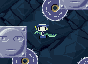
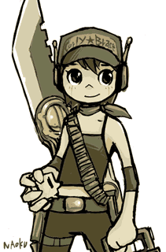
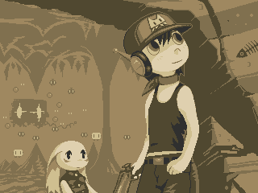
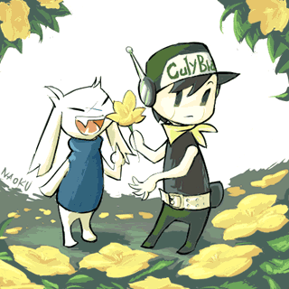

#4004 1 2005-08-11T20:23:34Z Keron Cyst Besides, it's been resurrected numerous times and died plenty more

1. I forgot how to trigger the Ma Pignon chat. What do you need to do that?
2. Do you think Pixel will make another game?
3. I'm working on a Wonderboy skin with better leg movement. It might not be as well synchronized with the end-game concept art, tho'.
4. Here's a challenge for you: don't speed-run it. Take your time, but don't use any save points. If you can beat it on the third ending and have verifiable/verified proof of the long play I will give you +500 Post Count or your own Member Title
BTW, I heard that the menu music changes depending on how fast you beat the game (also Wonderboy changes to either King or Toroko), and the hidden music's not in
Organya View 
#90038 2 2005-08-11T20:33:13Z GamingWolf Two things. Related to #4
ARE YOU SERIOUS!

How should I prove it? Screenshots could be false you know.
#90051 3 2005-08-11T22:05:21Z glenno14 1. I forgot how to trigger the Ma Pignon chat. What do you need to do that?
Is that the mushroom person? You need to get to the bit where the girl robot doesnt remember who you are then talk to ma pignon and then he gives you the mushroom badge. After that talk to him again and give the badge back then you fight him.
2. Do you think Pixel will make another game?
I hope so.....
4. Here's a challenge for you: don't speed-run it. Take your time, but don't use any save points. If you can beat it on the third ending and have verifiable/verified proof of the long play I will give you +500 Post Count or your own Member Title
I might be able to do that actually if you didnt have to get the third ending

BTW, I heard that the menu music changes depending on how fast you beat the game (also Wonderboy changes to either King or Toroko), and the hidden music's not in Organya View
Yeah I read about this. Its how fast you complete the final bit when your going for the third ending. I think anything under 6 minutes will get you a new title screen and music.....depending on your time.
Theres three different ones I think.
Can anyone give me tips on beating the final boss? (the third endng one) I dont have much health when I get there then he kills me....
#90061 4 2005-08-11T22:40:45Z Keron Cyst Use the health pack that Jenka gave you (don't use it unless you have less than 12- health). It restores your health one time. Even a speed-runner in a movie I saw had to use it before the fight
EDIT @
glenno14: what if Curly's not even
on the bed? I'm assuming you're talking about the bottom-right of Plantation. I remember now, but in my last game she wasn't there

What steps do you need to take to get her on
there?
EDIT #2 @
GamingWolf: you could show a four-hour movie of it (
), but then you're right; you could edit clips of the movie & stuff

#90063 5 2005-08-11T23:09:52Z glenno14 To get her there? Did you take her with you when you fought the core boss in the water? You need the tow rope (its in the bottom right corner of the core boss room then you can take her with you. Then you need to go to the cabin and put her on the bed. then you look at the computer then look at the bookcase. then look at Curly a few times then take her with you. I think thats all you need to do.....i think you'll need to start again if shes not in the bed.
Oh and I forgot I had that health pack.....thanks!
#90076 6 2005-08-12T00:57:26Z brickman A )Yeah, thats about it. I think for ma pignon you also have to talk to the guy next to the bed before seeing him, and you have to "use" the mushroom badge in your inventory before talking to him the second time.
B )As for those menu things, it goes in one minute increments. I think I remember reading it:
6:00 or less gets you curly instead of quote and the "running hell" soundtrack
5:00 or less gets you toroko and the "toroko's theme" music in the orgview that never appeared in the game
4:00 or less gets you king and A tune thats not in the orgview.
Actually, I'm pretty sure those are slightly wrong. I know those three appear in that order and with those tunes, and I know I got the first one completely right, but I think there's one or two inbetween. Regardless, there's only one tune thats not in the orgview.
C )I may take that challenge. I mean, I've done some pretty tricky stuff, so it shouldn't be a problem. But I'm only doing it for the NORMAL ENDING (I'll admit that I still haven't actually defeated ballos, but I'll get around to that eventually), although I may save Curly anyways (all depends on whether or not I'm willing to risk that time investment on the "hard" last cave). Actually, for the sake of not spending the early parts bored, can I pick up from a save at the end of grasstown? Everything with half a chance of killing me on a non-zero health run would still be in there, but I wouldn't have to redo all those fetch quests if I restarted.
#90158 7 2005-08-12T13:11:56Z glenno14 I think you get something for 2.00-3.00 minutes as well. Im gonna try ballos again.....I kinda gave up when I couldnt beat him....but now you reminded me about the health pot, I should be able to do it.
EDIT: I have a question.....I somehow have an "alien medallion" thing in my inventory....whats it for? How the heck did I get it?!
#90182 8 2005-08-12T14:09:06Z brickman The alien medalion is given if you beat the fish boss without taking one hit. Its just there for show and as an easter egg--it does nothing more than Curly's underwear or Chaco's lipstick.
#90226 9 2005-08-12T16:00:49Z glenno14 ah ok. I just wanted to know since I wasnt sure how I got it....I almost beat ballos....one more shot would have killed him......ah well. I'll do it later.
#90229 10 2005-08-12T16:05:51Z Keron Cyst @
brickman: that's the whole point
I can see it now, the pain of all the hard work you went through, going through the Sand Zone, Labyrinth, crushing the Core and going through the Waterway without any jets (
), and either dying from one of the Pushes (that's what they're called, right?
) at the end of Final Cave, or touching a lethal spike in the first section of Sacred Ground due to poor jetting
#90231 11 2005-08-12T16:12:04Z glenno14 well who knows.....someone might be able to do it if they're lucky.....but probably not....
#90800 12 2005-08-14T05:50:49Z Keron Cyst Dang it; I just looked at the original .PBM for the Wonderboy skin and I noticed that almost half of the color boxes for
Paint are missing. I tried to copy & paste my work into it and it made it greenish & weird
Anyone have a clue why that's happening, and how I can prevent it?...
#90802 13 2005-08-14T06:02:38Z astro Not really doing what you're talking about, it sounds like the file is using a unique palette of somekind. You may need to use some other program that can handle palettes properly.
#90868 14 2005-08-14T14:05:33Z brickman Hey, as long as you're doing skins, can you do a Curly skin? I always thought it was a shame there was no unlockables or anything that let you play as Curly, partially because she's just as cool as quote and partially because he even gave her the same full range of sprite frames as quote (I don't think there's a single frame for quote that Curly doesn't have an equivalent to). Switching the real Curly to look like Quote is optional.
#90871 15 2005-08-14T14:10:35Z Maniac *sits and waits for the Mac port*
#90906 16 2005-08-14T15:59:52Z Keron Cyst ... Switching the real Curly to look like Quote is optional.
"Quote?"
You want to swap the Curly & Wonderboy skins?...
#90922 17 2005-08-14T16:52:39Z glenno14 Quote is his name..... he tells curly it sometime I think.
#90949 18 2005-08-14T18:26:45Z brickman Yeah, when you give Curly the mushroom and her memory comes back she says your name is Quote. Not wonderboy.
#91119 19 2005-08-15T01:24:05Z Keron Cyst Whaaat?!
One of the fansites said it was... ugh, never mind

Okay, I'll see what I can do about that.
#91778 20 2005-08-17T00:35:50Z Keron Cyst All right, I'm totally clueless as to how to get Curly onto the bed in south-eastern
Plantation. I had two .EXEs running, one where Curly's life readings died and detached from me during the battle with the armor-plated fish, and the other which had Curly water-drained in the house in
Waterway. Neither have Curly next to Cthulhu. I had her there before, but just once. What did I miss this time?
#91781 21 2005-08-17T00:47:51Z brickman You're supposed to put her on the bed, check the computer, read the books, drain the water, and then TAKE CURLY WITH YOU AGAIN by looking at her two more times. I sincerely hope that last step isn't the one that caught you.
#91788 22 2005-08-17T01:37:36Z Keron Cyst You know what? If you have a profile right at the end of the game, can you just take snapshots of all the concept art shown during the first half of the credits and post 'em here (or PM/e-mail 'em to meh)?
#91793 23 2005-08-17T01:55:35Z brickman I could, but it'd be more efficient to just link you to the page where somebody already did it, right
here.
Speaking of that art, I'd absolutely love to see more of those styke of pics, for this game or others. Sadly most of the entries in the silly "fanart" section simply REEK of paint (and thats from somebody who uses paint), and the one that doesn't is in completely the wrong style. The one I think most needs one is the doctor taunting/fighting you with his red crystal while the caged mimicas in the background look on.
Edit: Yeah, I just did your challenge, and I'm so used to having self-imposed low health that with a full 50 hearts the game was almost ridiculously easy. I had one near-death misjump in sand zone, but other than that I sailed through to the end. I missed the jump after monster x and locked myself into the normal ending with noone saved, but I made up for that by doing last cave without reclaiming my jetpack from the scientist.
And you wanna know what happened? I got crushed by one of the presses at the end. You have no idea how tempting it is to pretend that didn't happen. No idea. . . and I would've soared through the bosses too with 5x the health I'm used to.
Oh well, I'm still the self-proclaimed king of cave story challenges.
#91800 24 2005-08-17T02:33:04Z Trogdor007 #91802 25 2005-08-17T02:37:33Z LittleViking Hahaha. Good question.
This is Cave Story.
#91804 26 2005-08-17T02:52:41Z Razorstar A great game. I'm up to the Ruined Egg Corridor. It's hard due to lack of Save Points.
#91807 27 2005-08-17T03:07:08Z brickman Can I restart from the end of sand zone with the penalty of taking the machinegun instead of spur and not getting any of the heart containers after the point I start (in this case, 14 hearts worth I believe) or the super missiles? That seems like a reasonable trade to me.
#91819 28 2005-08-17T04:10:17Z Keron Cyst Of course you could just lie your way through and say you did it, but sure as long as you don't pick up any unnecessary power-ups afterwards and you beat it on the third ending.
And use the
Bubbler to beat Ballos.
Jes' kidding on that last one
#91822 29 2005-08-17T04:26:02Z brickman Actually, the bubbler is, contrary to what seems obvious at first, VERY useful if you're doing a challenge. Why? It's got the best range of anything except the missiles (which are limited ammo) until you trade in your polar star (and most challenges make you hold onto it until after the labrynth). Additionally, its rapidfire is better than anything until then with the exception of a point-blank fireball masacre (which has obvious drawbacks and is worthless at far range or against fliers). And it can be used in low health runs as a bullet sheilf in the sand zone to boot. I'm not even counting the "shooting around obstacles" thing, because thats not really an issue in any of these levels. But its very, very good for tiding you over until your "main" weapon can be upgraded. And you can get it as early as mid-grasszone! If only it could shoot straight. . . jst kidding, it actually can shooot fairly straight if you tap the button.
#91824 30 2005-08-17T05:44:23Z Keron Cyst Sorry for not expressing my gratitude earlier; thanks for that useful link!
After taking a quick peek at them & refreshing my mind I realized that all I needed was the Ironhead Fish art (you'll see what I'm up to once the
).
I know what it can do. I'm just saying that trying to crush Ballos with it would be impossible since it's so weak and he [possible spoiler, tho' I doubt it (just for the hardcore gamers)]
has very few vulnerable areas[/possible spoiler, tho' I doubt it (just for the hardcore gamers)]

#91930 31 2005-08-17T13:04:14Z brickman Oh yeah, I know that it can't beat any bosses. But its not worthless either.
Hey wait a second, I just thought of the next challenge. Beat the game from grassland on using ONLY the bubble gun, including bosses. Saves allowed, switching weapons not. Just to keep the playing feild level while still letting me not be bored, don't take any of the heart containers from sand zone on. Imagine the final boss series with that gun.
#91936 32 2005-08-17T13:12:15Z glenno14 I pretty much use the bubble gun through the whole game......I dont like the other weapons much.
Thats sounds easy enough.....I might give it a go actually.
#91943 33 2005-08-17T14:07:24Z Maniac Now that the English translation is out for Mac, I'm going to go download something I've been wanting to play, since, like, forever!
#91944 34 2005-08-17T14:45:57Z brickman You didn't play just because the english patch wasn't out? I actually thought it was interesting to run through the story once just seeing and not hearing before getting the patch, because the "cutscenes" (if you can call them that) are animated enough to give you a general idea.
#91947 35 2005-08-17T15:34:24Z Keron Cyst Here's another challenge:
Rocket Launcher only
Never push A or S again after you grab it in the Egg Corridor unless you're fighting a boss who doesn't give any items (no switching allowed for the Undead Core, as I don't think you necessarily have to kill undead Misery). I'd be backtracking to health stations a lot...
#91964 36 2005-08-17T18:22:31Z Maniac I'm just going through the game regularly. This game's awesome! I can't believe I missed out on it for so long...
I'm in the section right after Monster X where Professor Booster gives you the Booster 0.8 if you talk to him... I just can't figure out how to get to the item screen!
#91965 37 2005-08-17T18:34:24Z glenno14 I use a controller pad thingy to play the game.....it makes the game even better for some reason.....
I dont think I could do the rocket launcher challenge.....seems a bit too hard for a simple bubble gun user like me

#91968 38 2005-08-17T18:40:18Z Keron Cyst @Maniac: push Q.
#91979 39 2005-08-17T19:14:26Z brickman I've tried the rocket launcher challenge for specific areas, the ones I remember being both versions of the egg corridor (in case you haven't noticed, the second egg coridor is my favorite area for challenges). So I'll try it for the whole game (with reduced health, of course--by now its almost impossible for me to find almost anything not ridiculously easy with 50 hearts, regardless of challenges. And carelessness at the illusion of invincibility would put me at a disadvantage if I tried to do full health challenges that are at the edge of possiblility. Perhaps THATS why I haven't finished hell--or maybe I just haven't gotten to the point of familiarity with ballos that you need for things in this game to be easy). Speaking of the egg corridor, see whether or not you can do the destroyed egg corridor backwards with 11 health and then forwards with 16
but without shooting anything but the critters (and I only shot them by accident while trying to fly over them with the machinegun). It completely inverts the enemies too-the dragons pose almost no more threat than they normally do, the big flies will follow you a bit but are too slow and quickly get caught on terrain, and the little flies will chase you halfway across the level flying through the walls and swarming at you. Then when you're done try going up the outer wall with that same 16 health without shooting anything either or using the machinegun to fly (since it can theoretically boost you up indefinitely). It almost feels in certain spots like they're made for it. Actually, a LOT of challenges feel that way (especially low health). If you want, I won't yell and scream if you do it both ways with 16 though--I only did it with 11 because I was backtracking to grab another one so I could do the outer wall, which I forgot to mention is so hard with this challenge that I couldn't even do it with 11. Oh and don't even think of turning this into a gamewide challenge--the labrynth is probably physically impossible because the roaches are directly in your way, and I can imagine other areas having similar problems or not being much harder at all.
Edit: this profile should save some time with that challenge. Just go back to the mimiga village and grab the heart from either the farm or the first cave (whichever I didn't take), and then for the other 5 there should be one in two of the following three areas: sand zone, grassland, labrynth. And I suppose you need to finish the rocket first for your jetpack back, but that doesn't take too long. Its not right there, but its pretty close and enough to negate any excuses.
Attachment (lost): post-27-1124306787.dat
#91985 40 2005-08-17T19:36:17Z Maniac Found it out myself. Now I'm in the Egg Corridor, second time. That core was
hard #91992 41 2005-08-17T20:09:55Z brickman Alright, I've come to a conclusion with the missile challenge: there's no way you can do that without ridiculous ammount of saving and loading over and over any time you run low, because of two things: A) Its impossible to get more without using some, meaning that if you get to one or two you're going to have to have a ton of luck to get more and if you run out (even if you ran out by knocking out three enemies none of whom dropped missiles) its practically game over, and B) The missile dropping is both random and not weighted very high, so if you save with one or two you may have to go outside, blast a group of enemies (thats if you're lucky--you may not have groups always) and exit to the menu 10 times before even getting one missile back. And you need two to get a profit. Thus, I officially deem that challenge and anyone who invests a large ammount of time into it stupid, on the grounds of relying ENTIRELY on luck.
#92007 42 2005-08-17T22:15:38Z glenno14 I'll try the bubble gun challenge tomorrow.
But now, im off to play fire emblem.
#92027 43 2005-08-18T01:01:04Z Andrelius I've heard of Cave Story a lot but never checked it out.
Now I finally got it and it's great. It's one of the coolest games ever. Though, it's awfully hard. I just started playing now and I'm in the egg corridor!
#92028 44 2005-08-18T01:04:33Z Maniac I decided to start over, this time trying to get the Booster 2.0 so I could get the Spur. And let me tell you, Core without the Booster 0.8 is
very difficult #92035 45 2005-08-18T02:22:16Z brickman You can get the spur with the 0.8, just as easily as the 2.0. You just need to not take the MACHINEGUN to get the spur, or the fireball lvl2 from chaba. You have to keep that "puny" pistol until you get out of the labrynth. "You've sure given it a good workout."
Edit: wait a second, did you just say that the first egg corridor was "awfully hard"? For most people, rather less those of the caliber playing n, the game is pretty easy until sand zone, possibly excepting the bosses in grasszone (bosses always tend to get harder before the regular areas do).
#92140 46 2005-08-18T10:18:14Z Maniac No,
Andrelius said he's in the egg corridor, and the GAME is awfully hard.
I'm just not sure how to get back up to the First Cave without a Booster 2.0... those blocks just seem too far away to jump to with a Booster 0.8.
Still haven't beaten Core
#92142 47 2005-08-18T10:31:17Z nevermore Just opened this thread for the first time. For a long time now I was under the impression that Cave Story was only for PCs. *goes to download*
Wheeheee!
#92151 48 2005-08-18T12:26:00Z Maniac It's been out for Mac for a while. However, the Mac English patch has only been out for a little while.
And yeah, it's awesome
#92159 49 2005-08-18T13:35:51Z Andrelius I'm finally in the Labyrinth, why are the roaches in the shop friendly?!
BTW, am I far into the game yet?
#92171 50 2005-08-18T14:17:07Z brickman Yeah, the labrynth is fairly far in. All you've got left is the labrynth (which is pretty long and big, with a total of five boss fights), pair of small but actioney areas (which, sadly, you probably know what they are already from references in this thread), a big annoying "fetch questy" area, and then last cave and the final bosses.
And those roaches are friendly so that one of them can give you a free item. What it is depends on what your main weapon is (machinegun, polar star, or spur since you have to skip him for the time being if you get that). Oh, and even if you've gleaned from this thread the way to get to the "good" ending I suggest you go for the normal one first (and I don't just mean running past the entrance to hell, I mean not unlocking it). Its much more interesting that way. Just go for the "good" one your second time (in my opinion, I differentiate the ending where you've unlocked hell and the one where you haven't just because of the plot differences between them, even if the ending sequence is the same unless you go there).
#92173 51 2005-08-18T14:22:50Z Maniac Well, I finally beat the game. Normal, where you defeat the Undead Core and run away but don't go into the Prefab building. I'm not quite prepared for the Secret Stage yet.
All I can say is... really, really aweseome game!!!1111oneoneonetwothousandthree

#92183 52 2005-08-18T15:24:12Z glenno14 the secret stage is extremely difficult....took me ages to do it.
#92199 53 2005-08-18T17:19:56Z brickman Now you can go back and do it again, but save cruly this time and unlock some more plot stuff, an extra two bosses and one area along the path to just the normal ending, and make the hell stage reachable. You don't have to beat hell to get more plot info and more areas/enemies out of the "good" path.
Out of curiosity, how many people have beaten the game without the jetpack? Its harder than beating it with the 0.8, of course, but actually easier than the 2.0 version. I think its pretty interesting how they made it to be possible like that, actually. And when you do that you fight the bosses with no jetpack and get a different (and shorter) taunting from misery. Its not necessarily too hard compared to some challenges, but its an interesting thing to try an a nice addition to some challenges (and a way to save cruly and booster without actually having to do the hard version of last cave--thats what I'm doing on my bubbler run for sure).
#92221 54 2005-08-18T19:34:16Z glenno14 So im about to try this bubble challenge.....is there a way for me to record it or something?
I suppose im not allowed to die?
#92224 55 2005-08-18T19:46:38Z brickman No, there's nothing in this challenge about saving or dying. This is entirely seperate from keron's challenge. All you have to do is beat the game, using however many continues you need, wihtout using any weapon other than the bubbler from the first chance to get it on (and the first chance is the first time you reach chaco's house, since thats when the jellyfish appear). Oh, and I'm making a change: you are allowed to use non-bubble guns to destroy those stupid star blocks, because othewise its very, very easy to unknowingly trap yourself in the sand zone with the level 2 bubbler and no enemies to kill to level it up who you can reach without breaking some of the blocks. In fact, there's actually two places where you can save your game in this state and thus wihout this rule would have to start over. However, you may only do this if absolutely necessary and cannot hit anything that isn't a star block.
#92227 56 2005-08-18T19:53:28Z glenno14 But is there a way to record myself doing the challenge so that you know I can do it?
#92301 57 2005-08-18T23:34:24Z brickman No, we have to rely on the honor system here. For all you know I've never even beaten the game despite claiming to like challenges so much (but then again, thats just a hypothetical, because if you can't trust brickman who CAN you trust?)
#92303 58 2005-08-18T23:37:29Z Razorstar No one apparently.
I've just about beat the game for the first time. I couldn't beat the Hulk version of the Doctor. I found out too late that missles work wonders on him.
What's the bubbler? The little Flame Gun you get from Santa?
#92309 59 2005-08-19T00:14:01Z Trogdor007 How do I play this on a mac?
#92333 60 2005-08-19T01:50:06Z brickman The bubbler is actually a hidden weapon, one that would almost be worthy of the title "secret" if its location wasn't so well known. As far as where it is, well. . . notice what I said about you being able to get it as soon as you reach chaco's house, and do a bit of backtracking
#92343 61 2005-08-19T02:04:27Z Maniac Well, today I dedicated much of my day to beating the game again. Beat it in one day. I think the Core(first time) gets a lot easier after the first time you beat it for some reason...
Anyway, I ran into the Prefab building, dropped down into hell, dropped into the first pit, died, then gave up and ran away.
They weren't kidding when they said the secret level was
difficult
I'll probably go back to it later - I've still got the save in the Prefab building.
#92346 62 2005-08-19T02:11:05Z brickman Yeah, I think everything in the game gets easier after you've beaten it a few times, moreso than in most games I can think of. I would never have imagined on my first run beating the final boss without 50 health and a heart potion, or taking out the core with only one weapon, or beating last cave with no jetpack and 20 health. Areas that pushed your limits the first time become easy on the second or third.
#92347 63 2005-08-19T02:12:31Z Trogdor007 Can someone please answer my question?
#92360 64 2005-08-19T02:26:11Z Razorstar Yes it's for Mac.
I finished the game with 43 health without the Bubbler. Can someone tell me how to get that? And where's the secret stage? I bet I could take it. These kind of games are my bag.....so far.
#92379 65 2005-08-19T04:16:55Z brickman For the bubbler, its in the fire in the assembly hall from mimiga village.
For the secret stage, I'll first suggest you take a look at the hint in the orefab building. But if you're too impatient for these subtlties, what you have to do is not talk to booster when he falls after killing monster x and thus finish the labrynth without a jetpack (he gives it to you later after fixing that teleporter to escape back to arthur's house), and then look around the area carefully before fighting the core for something that only appears if you didn't see booster. And then make sure you stop at the save room on the wawy out of the labrynth, and check the bed at the bottom of plantation. This is just the non-obvious stuff, BTW, a few of these are going to prompt you to do other things but these are the ones that aren't self-evident.
Then again, I think the altered last cave is probably closer to the difficulty level you're probably expecting for this secret area, the actual hell stage is guaranteed to humble you.
#92467 66 2005-08-19T14:41:00Z glenno14 yeah I just thought "how hard could the secret stage be? Im pretty good...."
I was overwhelmed by its dificulty!
#92561 67 2005-08-19T22:46:52Z Maniac Checked it out... it's pretty difficult indeed! Now I know why the sign at the start says "Welcome to hell!".
I can get near the bottom of the first shaft, and noticed Curly by a door... what's she doing there?
Guess I have to figure out how to use the minimum amount of boost possible.
#92564 68 2005-08-19T23:00:14Z brickman Yeah, you have to be fuel efficient for that first shaft. I actually just gave up trying that first jump and always just cheat by hitting a small spike for 5 damage to refill the fuel. Then in room 2 they reverse it--you just gotta hurry. And as for curly, well. . . I won't spoil it for you.
#92571 69 2005-08-19T23:10:48Z Maniac Yeah, I had to cheat too.
First, I gotta beat the game again so I can start Hell with 50 HP instead of 30. At least, I think I should do that...
Is there a time limit for Hell? Because I'd think the island would eventually hit the ground and you'd be all crushed and everything...
Ah well. Gotta figure out how to get all the way down. I know I can't use all the fuel getting to the big drop, so I have some to get to the little alcove.
#92580 70 2005-08-20T00:07:42Z brickman There's no time limit, but as discussed on page one of this thread there's bonuses for getting certain set times--but the important thing is beating it. In fact, experience tells me that if you just beat it once or twice at plodding speed you're gonna be ready for a speedrun just out of experience. Thats how everything works in this game.
#92582 71 2005-08-20T00:48:23Z Trogdor007 ARGH!
My question was, what do I do to get it for mac
#92583 72 2005-08-20T00:56:42Z brickman Oh, and Maniac, you don't have to rebeat it if you don't want (not that I'm saying you shouldn't, but in case you don't want to I'm attaching a save file here). Any who still haven't finished: don't take this.
Attachment (lost): post-27-1124499402.dat
#92686 73 2005-08-20T14:06:34Z Maniac So, that's a profile in the Prefab building with 50 health? Does it have the Nemesis or not?
#92688 74 2005-08-20T14:30:17Z brickman In case you couldn't decipher my ingenious code, zap stands for nemesis (the lightning gun) and charge stands for spur (the charge beam). So yes, it does.
#92692 75 2005-08-20T14:41:02Z Maniac Sorry.
It has 50 health, right?
Now just to figure out how to load save files...
BTW, I've managed to get down to Sector 3 with only my 30 health... those Butes are annoying!
#92697 76 2005-08-20T15:13:09Z brickman All you have to do to use the file is remove the old one, stick this one in the folder, and rename it "profile.dat" again so that the game recognizes it. All it is is a normal, functional save with an altered name so the game wouldn't overwrite it and it would be easier to sort.
#92699 77 2005-08-20T15:30:16Z Maniac With 50 health?
I went through Hell again, and this time managed to get all the way to Ballos...
It's going to be a while before I can defeat him, if he has 4 forms...
#92702 78 2005-08-20T15:43:54Z Teedle 4. Here's a challenge for you: don't speed-run it. Take your time, but don't use any save points. If you can beat it on the third ending and have verifiable/verified proof of the long play I will give you +500 Post Count or your own Member Title
Yay! Completed. Please change my custom title to Steamy Pile of Formica.
EDIT: What do you mkean, forged? Attachment (lost): post-27-1124552634.jpg
#92736 79 2005-08-20T17:18:55Z Maniac
Status report: Now on Ballos' second form.

#92748 80 2005-08-20T18:33:57Z brickman I'd better get back to trying the hell stage instead of these challenges--maniac's already caught up with me!
#92756 81 2005-08-20T19:05:36Z Maniac You were right - Hell's gotten really easy for me now. The hard part is getting through with a lot of health for facing Ballos. I've got to rebeat the game so I can have the Health pot with me when I get to the fight.
I know how to damage his second form, but it's really hard, and he keeps crushing me into the ground...
#92763 82 2005-08-20T19:31:46Z brickman What? There's no health pot in the save I gave you? Umm, well, oops?
#92782 83 2005-08-20T21:23:07Z Maniac No, I meant I didn't have a health pot in MY save.
I wasn't using yours until I was sure it had 50 health and a health pot.
Anyway, I'm beating the game over again. It's very very easy for me to beat over again by now - I may have to start doing challenges after I beat Hell
#93146 84 2005-08-22T10:46:33Z Maniac For those of you interested, (aka Brickman) I've managed to get to Ballos' fourth form. I've almost killed him too. Unfortunately, damaging him at that point is, well, hell

#93156 85 2005-08-22T11:43:03Z glenno14 I had 36 health when I got to hell.....ah well...the only bit in hell I find difficult not to lose health is the second part where you are running away while blocks are falling on you and those things are chasing you.
#93162 86 2005-08-22T12:23:36Z Maniac Oh yeah. That's horrible. Luckily, there's an exploit in the next room that'll let you refill your health back up to max, at the cost of merely time
")
Good for if you're doing Hell the first time, but something to skip if you're going for a speed run.
Anyway, just downloaded all the DM music and am happily listening to Grasstown while typing this post
#93170 87 2005-08-22T12:37:39Z glenno14 whered you get the music from?
#93172 88 2005-08-22T12:39:17Z Maniac The same site that Brickman linked to earlier. Unfortunately, all the names are in Japanese, so you have to manually translate the names to the areas based upon where you heard them, so it's a little bit of work.
Definitely worth it though
#93193 89 2005-08-22T14:43:34Z brickman Actually, there's a program available from somewhere (can't remember where) that (I believe) Pixel made himself that just plays any of the songs from the game, with or without looping. I've used it quite a bit. Here it is:
edit: there's a translator too, but I can't upload .exes.
Attachment (lost): post-27-1124721814.lzh
#93226 90 2005-08-22T16:46:32Z Keron Cyst WinRAR, people.
I want to try beating Sacred Ground & Ballos without using Jenka's health bottle.
#93231 91 2005-08-22T16:51:07Z Maniac I know, the OrganyaView thingie. However, unless it exports the songs in .mp3, I don't think it'll be of use.
Anyway, still attempting to beat Ballos...
#93531 92 2005-08-23T16:03:00Z Keron Cyst Can someone please get me a profile (don't care about how much max. health you have or other stats.) where you are just about to enter the Sand Zone and have not fought Curly yet? Many thanks in advance...
#93532 93 2005-08-23T16:15:26Z brickman Nope, I can't help you there. I think I can get you one right outside the unlocked red flower storage room with Curly beaten but still having the pistol, if that helps.
#93534 94 2005-08-23T16:17:02Z Maniac Read the rest of this thread, Brickman - currently on Ballos' last form and trying desperately to kill him.
EDIT:
...
Nevermind.
...
w00t! I finally, finally, beat Ballos! Gah, that was oh so hard I can't believe it was so hard ow my head hurts cuz it was so HARD!
*collapses from exhaustion*
#94052 95 2005-08-25T18:26:43Z Maniac *bump*
As a challenge, I decided to do the game without any save points, like Keron said
Died while leaving Grasstown to a deathtrap

#94065 96 2005-08-25T19:36:16Z Razorstar I've never died there. What a strange mistake.
#94067 97 2005-08-25T19:56:29Z Maniac Is there any easy way to prove that I beat the game without saving? Because this try I'd like to try and do that, and I'd like to be believed
#94152 98 2005-08-26T00:09:19Z glenno14 I asked a similar question earlier....but basically we'll just have to believe you if you say you did it....
#94157 99 2005-08-26T00:50:48Z Maniac I have to be more careful at Grasstown: I keep dying on the deathtraps!
#94160 100 2005-08-26T00:57:25Z Razorstar Again? I keep dying on Bosses. Nothing else.
#94245 101 2005-08-26T15:02:45Z Maniac The Grasstown bosses are rather easy. Well, at least I find them easy. But it's all too easy to fall into a deathtrap. And do you know how
cheap that feels?
#94365 102 2005-08-26T21:03:57Z brickman He meant the late-game bosses. And if you think the grassland pits feel cheap, imagine how cheap THE POUNDERS AT THE END OF LAST CAVE feel in this mode. Especially if you're already doing it with reduced health.
#94376 103 2005-08-26T21:35:01Z Keron Cyst 1. Get the
Spur and shoot them through the walls.
2. Look where there are no Pushes and stay there instead of charging the whole thing; plan it out slowly, and gather more resources by killing Pushes that have landed.
Is there any easy way to prove that I beat the game without saving?...
Use the
Fraps video capture function which doesn't work on ME
#94378 104 2005-08-26T21:46:12Z brickman Yes, I already know the tricks for those presses, its just that that one time I screwed up. I started to rush then changed my mind a second too late, probably after realizing I was about to screw up. Or maybe I just stopped a second too late in one of the spaces. I don't remember anymore.
#94389 105 2005-08-26T22:10:54Z Keron Cyst Oh, "Press"
Yeah, that's right; the [possible spoilers]
giant electric cannon-tipped sub-boss you fight before Ballos[/possible spoilers] is called a "Push."
EDIT So, did you beat Ballos yet (not just you,
brickman, but also
Maniac)?
#94924 106 2005-08-28T16:12:17Z ShadowWolf i'm going to start off by saying; this is a great game, and i would like to thank you people for showing me it. next, i wonder why everyone calls him wonderboy, it says his name after you save curly and get her memory back (i won't say it, because i don't want to spoil it for people that want to figure it out). also, does anyone know what the area labeled "passage?" is for? it is in the plantation right above the starting point/door. i get that the clay guy is carving all the wearers of the demon crown, but what is the door that is below and seeming impossible to get to? if anyone knows, please tell me, because i have tried everything i can think of to get in it.
#94925 107 2005-08-28T16:18:11Z brickman If Curly has told you the hero's real name, you soon will find out. Oh, and make sure you shoot the statues once they're all finished.
#94928 108 2005-08-28T16:28:58Z ShadowWolf hmmm... shoot the statues... genious!!
okay, thanks, i'll make sure to do that.
also, i just discovered something strange, when all the migami are suppose to be gone from the plantation, there are still 3 left though. the old guy, the fisher, and the one who just sits in prison while eating.
EDIT: one more question, is there a way to get back down once you go to the top with the rocket? if i jump, i die instantly. or is there a teleporter after the last cave? because i haven't beat the last cave yet. but just in case, i haven't saved after taking the rocket up, because i'm not sure if i completed all quest and such (for instance, i think there is another quest for the robot in the grassland, because if you talk to him, he says he wants to get all the other robots activated, and have a party)
#94934 109 2005-08-28T17:03:16Z brickman It is possible to get back down, you have to jump into the hole instead of steping (thus you have more momentum) and stay in the center. And if Curly has given you the heart thing, there's nothing left that you have to do, except possibly ask jenka for another potion if you need it or trade your knife for the nemesis if you want it. The robot party thing is a joke.
#94936 110 2005-08-28T17:23:02Z Maniac It says in the credits that that second-to-last boss is Heavy Press. They're called presses.
Anyway, yes, I have beaten Ballos.
Yes, do as Brickman says and you can get down, though I'd avoid it if at all possible.
And yes, the tea party thing is a joke. Though you can actually watch it during the credits.
#94938 111 2005-08-28T17:33:48Z ShadowWolf watch the tea party during the credits? XD
that is funny. i keep dying in the part where there is a line of those press things, right after the red golem. i'll make it past eventually...
also, i may have good news, i found this screenshot on the pixel website, and it is definitly not from this cave story.

different background and weapon (unless it is from the final area, because i still haven't made it past the last cave)
so hopefully there will be a new cave story =D
edit: also hero's hat supposedly says curly brace on it... if anyone wanted to know...
#94942 112 2005-08-28T17:51:34Z Maniac I think that's a skin.
Also, there is absolutely no way of knowing what's on the hero's cap: it's just shown as a white line on the red cap.
#94961 113 2005-08-28T19:21:42Z brickman That screenshot is I believe just something from development, a preview that happened to show things which were changed later.
#94963 114 2005-08-28T19:34:34Z ShadowWolf his hat does say curly brace, if you go on the pixel website, it shows a lot of pictures of him, and everyone (except two) say curly brace, the other two; one has a picture of ikachan, and the other says something flower.
and i hope that the one picture is of a new cave story... but i have my doubts.
#94966 115 2005-08-28T20:04:36Z brickman In all of the ending credit pictures, his hat has no text at all.
#94972 116 2005-08-28T21:52:49Z Maniac Yeah, so quit trying to pass something on from a non-dedicated fan site.
*decides to try again at the no saving challenge*
#94974 117 2005-08-28T22:07:56Z ShadowWolf hmmm... his hat might have no text in the end, but remember in the egg base whatever, sue says "the writing on your hat isn't this language, are you from here" or something along that line...
also, here are some pics of his hat saying curly brace;

hero with that uknown cool blade weapon

hero in some place (i guess a mimiga house) with toroko(ikachan on the hat)

hero with a yellow flower and su (the hat says culy brace...)
a cool picture of su =P
so hah! it does say curly brace on the hat
all these pictures are from the pixel website
#94978 118 2005-08-28T22:51:34Z brickman I refer you to
this, a page containing every illustration actually made by pixel (except of course the actual character sprites). I dare you to fin d one where the hat has writing, rather less curly's name.
#94986 119 2005-08-28T23:36:34Z ShadowWolf well, you do make a good point with showing me this page, but this is where i am getting the pictures from
Pixel
click on the 3rd link which will take you to the art page, then click on the 2nd link of the art page to take you to the pictures of hero
but... i can't read japanese and it might say fanart, so i might be wrong, but su did say in the game that there was writing on hero's hat...
so there must be something on his hat
#94987 120 2005-08-28T23:42:58Z Maniac Yeah, that's definitely fan art.
#94998 121 2005-08-29T00:43:28Z Keron Cyst Pixel doesn't draw like that. The tiny screenshot you posted higher above looks interesting tho'.
#95049 122 2005-08-29T10:01:21Z Andrelius This is bad... This is very bad!!!
In the waterway area, I missed the door with the savepoint. When I went back to the Mimiga village I couldn't really do anything so I read a walkthrough. It says when I enter Arthur's house somethings supposed to happen, but nothing happens....
I'm screwed T_T...
#95058 123 2005-08-29T10:29:28Z Maniac Start over from your save right after the Core fight and before the Waterway.
You do have one, right? And you didn't save after the waterway?
#95061 124 2005-08-29T12:28:24Z Andrelius #95062 125 2005-08-29T12:35:43Z Maniac If you want to get into Hell, start over. I mean it, start a new game and work your way up to that point.
In the meantime, I've been browsing the Doukutsu upload site, and came across this:

First, I'm amazed that somebody managed that time
Second, looks like there's even yet another character you unlock if you can manage to beat Hell in under a MINUTE.
#95064 126 2005-08-29T12:48:47Z Andrelius I started over, and I'm right here in the labyrinth! That was faster than I thought.
You can play as another character?!
#95071 127 2005-08-29T12:58:55Z Maniac No, you just get a different person at the title screen and different music.
Which means, I'm off to do a speed run. Not for the <1:00, of course, but I'm sure I might be able to pull off a <6:00.
#95073 128 2005-08-29T13:16:56Z glenno14 This unknown blade weapon shadoweyes keeps going on about......isnt that just the blade you get from King? (I think thats what the persons calld)
#95075 129 2005-08-29T13:23:34Z Maniac I don't know.
Anyway, don't mind me, just going through again

#95077 130 2005-08-29T13:27:00Z glenno14 Can someone just give me the link to the games music? im not searching through 5 pages to find it.....I wanna listen to mimmiga town music!
oooooohhh time to take my inhaler.....
#95092 131 2005-08-29T14:16:57Z Maniac Music
Go to the link where it links to the folder with all the music files ripped from OrganyaView. Warning: all the names are in Japanese, so use the titles on the page linked to in this post to translate.
#95093 132 2005-08-29T14:18:41Z glenno14 Thanks Maniac!
You rule...
#95097 133 2005-08-29T14:34:36Z Maniac Don't thank me, thank
SkyeWelse 
#95151 134 2005-08-29T20:22:35Z brickman This is bad... This is very bad!!!
In the waterway area, I missed the door with the savepoint. When I went back to the Mimiga village I couldn't really do anything so I read a walkthrough. It says when I enter Arthur's house somethings supposed to happen, but nothing happens....
I'm screwed T_T...
Something only happens there if you didn't get the jetpack in the labrynth. It will work whether you are actually doing everything right to
save curly or not, so the save room won't affect it.
Speaking of the jetpack, have you noticed that quite literally everything in the game is possible without it or the machinegun except for one place: the very start of the outer wall. The rest of outer wall is designed to be possible (the aligators were a nice touch), but not that first jump (and, I suppose, you can't get the nemesis). I've spent quite some time trying to fingure out some way to get up there without it, including shooting the dragon, kazuma and the ground, as well as trying to stand on both and checking to see if talking to him did anything useful. I will make a dedication map for whoever figures out and explains the way to do this first, because it just doesn't seem right. Speaking of which, doing everything else without the jetpack is easy enough that I would actually suggest combining it into other challenges rather than treating it as one of its own.
#95199 135 2005-08-29T22:48:55Z Seuffle I dont really like this game..
Is there a Non-japanese/chinese version
*braces himself* please dont smite me!
#95204 136 2005-08-29T22:56:30Z glenno14 theres an English patch.....
#95425 137 2005-08-30T10:01:20Z Maniac It and the English patch are also for Mac, so there is absolutely no excuse not to play. Download it now!
#96037 138 2005-09-01T01:22:39Z Trogdor007 Ok, I'm trying to beat it to get the third ending... This entails NOT getting the Machine gun...
I'm doing pretty well... I'm stalling on Toroko though... She's tough without it.
What's the weapon I get when I give it to the gunsmith?
#96058 139 2005-09-01T02:38:19Z brickman Toroko's not too hard using the fireball, and you can unload your missiles if you have to or switch to bubbler if you're somehow stuck and incapable of doing it.
And the gun he gives you is a "finished" pistol which is always level three and (more importantly) charges up when you hold attack and then fires a powerful beam when you release (with three strengths depending on how long you charged). It tears through anything pretty much.
#96070 140 2005-09-01T03:06:38Z Trogdor007 I know Toroko's not hard! What I said, meant I died once, and now I'm trying again!
Oh crap... you mean I wasn't supposed to trade it for the snake? Dang...
Well, I was on monster X. Is it too late to get that?
#96074 141 2005-09-01T03:29:36Z brickman The snake is interesting, but I think its probably the least impressive of the three main weapons. In open combat it sucks compared to either, and the level design doesn't really allow for shooting through walls to ever be a big advantage except if you're speedrunning hell. Try to reload from before you traded. And as for the spur (aka charge pistol), you can't get it until you're out of the labrynth, meaning that five bosses and four sprawling maps must be done with the pistol. They don't give the best weapon in the game out for free!
#96116 142 2005-09-01T13:37:24Z Trogdor007 How the hell do I load from a certain point?
I'll just restart.
#96150 143 2005-09-01T14:16:02Z glenno14 Im thinking of trying an all fireball gun run.....well I need some more spare time first.
I cant believe on the first day of school, my teachers gave us 6 homeworks!
#96160 144 2005-09-01T14:25:01Z Trogdor007 Fireball guns suck against monster X.
#96180 145 2005-09-01T14:51:41Z Maniac Yeah.
Speaking of which, I went through the game again up to him. The catch: I did it all with 3 HP. Yeah, that's right, I beat everything and anything using only 3 HP.
Of course, it's a lot harder that way: from Sand Zone on pretty much everything is a 1-hit kill, so you gotta be pretty good

Now, obviously, it's no surprise that I'm right here at the moment, Monster X is just
insane with just 3 HP. I've even gotten to his second form, but it's really difficult to do damage to him when he throws loads upon loads of stuff at you and touching even one kills you.
#96182 146 2005-09-01T14:54:27Z Trogdor007 Wow. Good job. So I need to start over now.
DAMN!
#96183 147 2005-09-01T14:56:22Z Maniac Yeah. It's actually a little easier in some cases, since you don't have to spend extra effort going for life capsules. I also went without the Missile Launcher, again, easier since EXP shows up more often (obviously, in a 3 HP run, you can pretty much disregard hearts)
#96251 148 2005-09-01T20:09:40Z brickman Yeah, moster x is exactly where I got to in my 3hp run. I don't remember which gun I took though, but if it was the pistol I may just want to try again with the machine gun. Spur is useful, but I can't think of any bosses except monster x and possibly (possibly) the first core that throw so many projectiles at you to be THAT hard in a 3hp run (although all will be hard, X is almost impossible and almost totally luck). And with saves, what you do is just copy your profile at any point you want to be able to load from and rename the copy something descriptive (for example sand zone start no machinegun 8hp profile.dat), and when you want to load delete your current profile and make a copy of the renamed save which you will rename "profile.dat" and you'll be there. Its useful to make as many as possible. I'll lend you one with the pistol in the labrynth (either the start or at the sotre cockroaches, can't remember) and you can work from there.
Attachment (lost): post-27-1125605380.dat
#96253 149 2005-09-01T20:27:42Z Maniac Yeah, I was using the machinegun for the first time. It's a great weapon, though not quite so good as the Spur.
Anyway, I may want to try Monster X again. It's possible to beat him, the secret is to hit him once with the blade, then run away really quickly and dodge all the projectiles. Repeat. The homing missiles part is easy by comparison.
How do you get to the profile.dat on a Mac anyway?
#96261 150 2005-09-01T20:52:13Z Trogdor007 So I hold on to the pistol until the end of the labrynth?
#96274 151 2005-09-01T21:46:39Z brickman Yes
#96279 152 2005-09-01T22:02:12Z Maniac If you want to get the Spur, that is.
Anyway, finally got past Monster X, the Core, Ironhead, and all that other junk. Skipped the Sisters obviously.
Now I'm about to scale the outer wall.
#96314 153 2005-09-01T23:54:29Z brickman I can't see what advantage you have by not taking the missiles, maniac. You don't need health or weapon energy, since almost everything does more than three damage. Thus, you have nothing to gain from not having anything drop missiles. However, you will probably come eventually upon some boss who would be much less difficult with missiles, and have already already done some. I'm thinking most notably about the doctor's second form, and perhaps about the slight advantage in damage output when you need to quickly kill misery during the final battle compared to the machine gun.
#96320 154 2005-09-02T00:06:36Z Maniac Too late now, I'm at the start of Final Cave and don't feel like backtracking
If it doesn't make the game easier, then consider it another factor of the challenge I'm doing.
#96321 155 2005-09-02T00:07:16Z Trogdor007 Ok... Half way through sand zone.
#96322 156 2005-09-02T00:07:54Z Maniac Doing a challenge or just regular playthrough?
#96378 157 2005-09-02T04:02:21Z Trogdor007 Trying to get the beam gun/third ending. Trying Monster X again.
#96485 158 2005-09-02T15:23:45Z glenno14 Monster X is one of the easiest bosses in the game.....why do people keep mentioning it so much?
#96500 159 2005-09-02T16:09:20Z Maniac Because in his first form he sends a truckload of projectiles. Also, I mentioned him because I was doing the game with only the 3 hit points you get at the start. Thus, even touching just one of them kills you instantly.
#96505 160 2005-09-02T16:13:20Z Trogdor007 I don't know what happend! I beat him, and then a missile hit me!
#96516 161 2005-09-02T17:02:12Z Maniac Start again
Now I'm currently at the point where you have to fight the final three bosses. Misery and the Doctor aren't all that hard, but Undead Core... yeah, that's another one of those "loads of junk that's nearly impossible to dodge them all so just don't get hit too often" bosses. Except of course, in a 3 HP run pretty much everything kills you. Well, actually Misery's summons only do 2 HP of damage, but still...
#96543 162 2005-09-02T19:07:52Z Razorstar 3 HP run?!
Damn......
#96576 163 2005-09-02T21:38:46Z brickman Monster X is one of the easiest bosses in the game.....why do people keep mentioning it so much?
What do you mean? I'm pretty sure that he's one of the ones that acts as a wall to players their first time through, and when doing almost any challenge he's hell. He has small weak points in his first form with a lot of health and tons of projectiles, not to mention squishing you, and in form two he summons missiles that, while not as numerous or fast as the previous form's attacks, are annoying in their ability to fly through anything (including the floor, I think) and the difficulty of killing them (not good for healing). The only solace is that you can get lined up to do a lot of damage with missiles, knife, or machine gun from under him and his projectiles don't deal too much damage--but in challenges you almost always either aggravate those small weak points (on a specific weapon one) or those projectiles suddenly become so strong that you simply can't afford to stand under him and suddenly he takes forever to kill in addition to filling the screen. And the fact that it takes so long to get there from the save doesn't help.
#96582 164 2005-09-02T22:03:31Z glenno14 well I need found monster X difficult.....I never even died agaisnt it....
#96588 165 2005-09-02T22:09:19Z Trogdor007 Have you tried a no save game or third ending or 3 hp? I think not!
#96590 166 2005-09-02T22:10:46Z glenno14 Yes actually
#96592 167 2005-09-02T22:12:29Z Trogdor007 dang, there goes my point.
I'm sorry.
#96595 168 2005-09-02T22:15:56Z glenno14 Well I couldnt do the 3 hp run.....I get hit alot in the sand zone.
I done the no save run.....and I have got the third ending...
Hooray 1,300 posts! I think....
#96598 169 2005-09-02T22:44:31Z Maniac Yeah.
Still trying to beat the final bosses... it's hard!
Here's a big hint to all of you 3 HP-runners: always, always place avoidance of damage as a higher priority than causing it. Always keep your distance.
#96600 170 2005-09-02T22:54:50Z brickman If you're stuck in sand zone, I've got one word: bubbles.
#96619 171 2005-09-02T23:23:57Z Trogdor007 yeah, especially in that flying skull area.
#96660 172 2005-09-03T00:07:35Z Razorstar I get hurt a lot because of my impulse to want to kill Sand Crocs.
It's possible, but I bet everyone already knew that right?
#96666 173 2005-09-03T00:12:22Z Trogdor007 yeah... I've only done it once. they have really low health.
#96672 174 2005-09-03T00:19:33Z Maniac It's not worth it though. At all. You're better off just avoiding them.
#96723 175 2005-09-03T01:36:06Z Trogdor007 exactly! It's a bit difficult to dive out of the way in time.
#96728 176 2005-09-03T01:43:25Z brickman I didn't know you COULD dive out in time for the green ones. I've only killed them after getting bitten. The purple ones from outer wall are a different story, of course.
#96729 177 2005-09-03T01:47:34Z Trogdor007 what purple ones?
#96735 178 2005-09-03T01:59:07Z Maniac They're blue, not purple.
Yeah, for those you walk into the pit, then quickly jump and boost up and you'll barely avoid being chomped. However, it's time consuming and not really worth it.
#96737 179 2005-09-03T02:06:25Z brickman Yeah, but their purpose isn't actually for killing. They're there mainly for the non-jetpackers (remember what I said about it seeming like it was made for it?). You step on it and immediately jump, and you'll evade his jaws and be able to stand on him to reach the next step.
#96740 180 2005-09-03T02:07:38Z Maniac Or you could just blast all the star blocks, and jump just before you drop into the pit. Then you'll make it across and keep going.
#96771 181 2005-09-03T02:48:14Z brickman Umm, I'm talking about the ones in outer wall. There's no reason whatsoever to go down there with the sand zone ones, they're faster and that jump is easy to make anyways. But in outer wall, if you're going without the booster you have to stand on every one.
#96930 182 2005-09-03T16:18:55Z Trogdor007 Where in the outer wall?
#96938 183 2005-09-03T16:31:16Z Maniac About two-thirds of the way through.
You can get up even without standing on the sand pits, you just have to jump before touching them.
Or, of course, you could machine-gun your way up
#96968 184 2005-09-03T19:19:35Z Keron Cyst brickman, what's the purpose of the clock room in the Outer Wall? I could never open that chest
#96988 185 2005-09-03T20:37:34Z Trogdor007 that's if you save the girl, right?
#96990 186 2005-09-03T20:39:34Z brickman If you've never gotten it open, you obviously haven't gotten the most out of this game. If you are following the "good ending" path (and supposedly you have to get there in under three hours, but thats so much time that I think the guy who figured it out was the only one to ever not make it), you will be able to open it to find the hell stage timer.
#97007 187 2005-09-03T21:26:47Z Trogdor007 to get the booster 2.0, do I need to jump over the proffessor?
#97020 188 2005-09-03T21:48:26Z brickman Yes, you have to make that jump on foot (as well as the rest of the labrynth, of course). Luckily the save disk is the one you can reach and its the health charger thats on the opposite side (you can heal by killing roaches where X used to be). Oh, and look around before the core. . .
#97023 189 2005-09-03T21:50:41Z glenno14 If you cant make the jump then jump when you reach the red line....if that made any sense.....
#97024 190 2005-09-03T21:51:29Z Trogdor007 It doesn't... can you rephrase that?
#97026 191 2005-09-03T21:54:08Z glenno14 Well basically the gap you have to jump over to get past the professor is pretty difficult but if you look closely theres a red dot on the ground. Now when you run you have to jump when you reach that dot you have to jump then you should make it.....
#97029 192 2005-09-03T22:00:29Z Trogdor007 Oh, ok.
I have to beat the monster X again, because I slipped down to the proffessor.
What's up with the cat in monster X?
#97030 193 2005-09-03T22:12:53Z glenno14 I dont know.....must be a japanese thing.....
#97035 194 2005-09-03T22:34:43Z Trogdor007 The core is pretty difficult without a machine gun. Incredibly easy with it.
What weapon do you reccomend?
#97038 195 2005-09-03T22:56:54Z Maniac Oh, ok.
I have to beat the monster X again, because I slipped down to the proffessor.
What's up with the cat in monster X?
You know, I think it used to be a stray cat that was roaming the Labyrinth beforehand, but Misery decided to turn it into a big huge machine when she sent you down there to keep you from escaping.
#97040 196 2005-09-03T23:16:29Z Trogdor007 I wonder how the cat survived the labrynth...
or maybe it was jenka's.
#97043 197 2005-09-03T23:19:46Z Maniac Eh. It's big, it has claws. I think the roaches just decided to leave it alone.
#97047 198 2005-09-03T23:23:45Z Trogdor007 Maybe Jenka had kittens at first, and then switched to puppies.
After balrog, what happens to the other four puppies?
#97188 199 2005-09-04T13:44:13Z Maniac I think they ran away into their own little special hiding place we can't get to.
#97372 200 2005-09-04T23:41:44Z Maniac w00t!
YesyesyesyesYES!
*phew*
I finally beat Cave Story with only three hit points. Wow. That was difficult.
I was having a lot of trouble with the Undead Core at the end, so I went through and beat almost all of the game again, this time getting the Spur. It wasn't easy, but I finally did it. And I was so worried about getting crushed by a block too. That would even top Brickman's presses
Anyway, YAY!
And no, no, I am
NOT ever, EVER going to do Hell with 3 HP. EVER!
#97423 201 2005-09-05T01:30:27Z Keron Cyst ... And no, no, I am NOT ever, EVER going to do Hell with 3 HP. EVER!
Aw, you're no fun
Send me the
Profile.DAT #97425 202 2005-09-05T01:32:26Z Maniac I can't find it
Even if I could, it'd be only at the Prefab Building before the final fights - with 3 HP!
#97431 203 2005-09-05T01:41:43Z Grimreaper0125 I love cave story but i can't get past the sand zone.
I can't find all the puppies.
can you guys help?
#97480 204 2005-09-05T02:17:04Z Maniac Quote
Any hints for level 3? I've got the flying machine gun of death, and have obtained four puppies, including the one that's hidden in the chest next to the heart container, at the end of the obscured tunnel.
Uhm... just... find them all maybe?
#97506 205 2005-09-05T02:36:48Z brickman There's two that you will come across just taking the route straight to the storage room, one that is in a branch up from that route about halfway there (I think using pawprint walls). One is in a secret room accessed by a pawprint wall at the top of the shaft outside jenka's house, and the last is in curly's house (talk to one of the mimigas to be able to get it).
#97510 206 2005-09-05T02:39:55Z Maniac Myeah, that's pretty much it. Of course, you have to fight Curly to get it though
#97518 207 2005-09-05T02:46:40Z brickman You mean there's people who don't do that first anyways? There's a save point and charger in there, and for some people their primary weapon upgrade. Plus, you know, the bosses are more fun than running back and forth across sand zone.
#97522 208 2005-09-05T02:52:11Z Trogdor007 Trog's Log-
I have defeated the core! And the fish...
and now I have the spur, and the booster, and I'm in the egg corider facing the twins.
#97579 209 2005-09-05T06:51:22Z Ryuk What is cave story?
#97636 210 2005-09-05T14:57:01Z Keron Cyst Wow.
http://agtp.romhack.net/doukutsu.html
Please don't ask anything else until you've read through more or less all seven pages and make sure you get the translated English version...
#97650 211 2005-09-05T18:11:45Z Maniac Trog's Log-
I have defeated the core! And the fish...
and now I have the spur, and the booster, and I'm in the egg corider facing the twins.
With the Spur, the Sisters are so easy it's almost not worth mentioning.
#98096 212 2005-09-06T22:28:19Z Trogdor007 I like the chicken gun.
That's how i beat the beet boss in the last cave. which was easy.
When's hell?
#98103 213 2005-09-06T22:42:35Z brickman Hell is after the "final" bosses, you get there by entering the prefab building again while running from the falling blocks. It is only open if you're on the path to the good ending (booster 2.0 and the heart clasp that Curly gives you after you restore her memory).
#98104 214 2005-09-06T22:44:00Z Trogdor007 Is it worth it?
Ugh, muscle doctor is difficult! and the level 3 chicken gun sucks.

#98105 215 2005-09-06T22:44:34Z Keron Cyst Should try beating Ballos with the Bubbler / level 3 Nemesis...
#98108 216 2005-09-06T22:47:49Z Trogdor007 Who is ballos?
#98119 217 2005-09-06T23:15:41Z Maniac Remember how, in the Core, when you got the Tow Rope and beat the first Core, the game tells you about Ballos when you supposedly drown?
BTW, brickman, I think I finally figured out why the island falling can't kill him but a robot with a gun can. I'm not gonna spoil it until Trogdor gets to him, though. Or I could PM you. Whichever.
#98121 218 2005-09-06T23:17:19Z Trogdor007 Spoil, i don't care. I'm on that mega battle with misery/sue/doctor.
#98133 219 2005-09-06T23:26:51Z Maniac Alright, alright. Just finish it up, alright?
BTW, the Last Battle fight music is soooo awesome. I listen to it all the time
#98148 220 2005-09-06T23:47:56Z brickman Yeah, a LTO of the game's music is awesome. Especially last battle, the scorching through (the second egg corridor), opression (the first core battle), the labrynth fight (I can't remeber what its called), and in a different sense the outer wall music (both the area music and the "bad" ending). If I ever make any games, you can bet that this and the spirit engine will account together for all the music in them, and I'll probably be tempted to add more levels or bosses just to incorporate more of the excelent tracks. Assuming I can get permission, of course.
#98152 221 2005-09-06T23:51:58Z Maniac the labrynth fight (I can't remeber what its called)
Labyrinth Fight
Agreed. I listen to all of those tracks, and several others. The Cave Story theme song is also nice.

Aaanyway, I think I'll PM you my theory.
#98160 222 2005-09-07T00:11:27Z Grimreaper0125 I'm in the labrynth w, and i can't get past the big car thingy.
Here i'll post a screenie.
Attachment (lost): post-27-1126051887.jpg
#98169 223 2005-09-07T00:22:25Z Maniac Oh yeah. This one stops a lot of people.
In it's first form, you'll want to get rid of all the roaches in the hallway. Makes sense, fewer things to run into and shoot you, right?
When it opens up, there'll be four pods that'll shoot truckloads of pink particles at you. Those are your targets. Blade them into oblivion, but make sure you aren't killed.
You'll notice its health bar doesn't go down as you do this. That's because there's a second form. Don't worry, it's a lot easier than the first form, so I'll just not spoil it and let you continue on.
#98189 224 2005-09-07T00:38:34Z Grimreaper0125 O, i forgot to include i keep on dieing on the second form, the one where it shots a bunch of littel round things.
#98193 225 2005-09-07T00:41:51Z Maniac Oh yeah. The second form's a lot easier for some reason. Just keep blading the center until it falls over. The splash damage will help get rid of the homing missiles. When it shuts, there'll be one or two missiles left, which you can easily destroy. Repeat. The second one's a lot less troublesome than the first form.
#98199 226 2005-09-07T00:46:25Z Grimreaper0125 I didn't even notice the blade was so strong, thanx for the help.
#98213 227 2005-09-07T01:00:08Z Maniac Heh. Good. You'll need it in the next fight. Otherwise it can get a tad tricky.
#98216 228 2005-09-07T01:02:27Z brickman I've looked at your theory, Maniac, and I've provided my rebttal. I would very much like to put them and future arguement over it in this thread, though, using white text if needed.
#98219 229 2005-09-07T01:03:59Z Maniac Sounds good
#98252 230 2005-09-07T01:59:30Z Trogdor007 Augh! I'm in hell now. I made it past the flying witches, and now I've got curly awake on top of me.
EDIT- are there save points in hell?
#98263 231 2005-09-07T02:49:37Z brickman Save points? SAVE POINTS? HAHAHAHAHAAHAHAHHAHAHAHAHAHHAHAHAHA!
No. You have to do it all in one run. Thats why its called hell. Trust me, its better that way than the reverse.
#98266 232 2005-09-07T03:02:26Z Trogdor007 Oh well. Does it have more left then where I am?
#98268 233 2005-09-07T03:06:38Z brickman The area you've reached is the largest part (though not necessarily he hardest). After it comes two, thats right two, bosses. And lets just say ballos doesn't go down easy at all.
#98402 234 2005-09-07T13:18:56Z Maniac Teehee. Save points. What a load.
Myeah, this is the main Hell area you got into. Not *quite* the hardest, but it's still hella-difficult. My advice: for now, take your time, and kill each monster one by one. Stay well clear of the Deleet barriers, when they blow up their explosion is rather large.
So, um, I suppose I should probably present that theory of mine regarding Ballos so as to start the debate...
#98439 235 2005-09-07T16:22:39Z glenno14 I have listened to most of cave storys music but strangely, I have never listened to the final boss music.....hmmm......
hehe save points in hell......I wish there was save points in life.....
#98441 236 2005-09-07T16:32:01Z Maniac
You could save, eat a cookie, load game, eat a cookie, load game, eat a cookie...
#98500 237 2005-09-07T21:45:25Z brickman So, um, I suppose I should probably present that theory of mine regarding Ballos so as to start the debate...
Consider it done.
Quote
Quote
Quote
Quote
Quote
Here's my theory regarding how the island falling can't kill Ballos, but the island falling can:
Seeing as Ballos' orb form has invincible armor, when the island falls he just changes into the orb, shuts his eyes and weathers the impact. Then he just transforms back into human, and blasts his way out into the surface.
Hey, it's simple, and it works, right?
That would work, except the orb seems to only be used when he's in danger. If you didn't notice, he WANTS to be killed, but for some reason can't allow himself to die. Thats the only reason he's defending himself at all when he's just asked you to kill him, and definitely the only explanation for him putting up such a good fight to the full extent of his powers (otherwise he would just do the first form for show and let you smash him). The ballos ball only exists to defend him if his foe proves too powerful.
I'd say being inside an island that's hurtling down towards the earth would be considered "in danger"
That reminds me of a question regarding games: when bosses have multiple forms, and notice you've managed to defeat their first form, why don't they just change right to their final form and obliterate the living guts out of you? It'd skip the bother of going through the intermediate forms
I think the answer depends on the boss. Some enjoy toying with you and want to see how far you get (overconfidence), some expend a lot of energy or are otherwise hurt by changing form (example is the doctor's second form, or one where the boss ends up just getting more aggressive/desperate near the end). Some may just not want to risk any knowledge of their true power getting out. Some might realize that if they skip to the final form and you beat it they've got nothing left. And some may just do it for cinematic effect (aka all of them).
Come to think of it, most bosses tend to not have more than two distinct forms, even if their attack patterns change numerous times. Its mostly just final bosses of really boss-focused games.
Ah, you got me on that one. But I'm still ahead in the Ballos debate.
#98504 238 2005-09-07T21:48:15Z Maniac Alright. Anyway, it's your turn to provide a counter-argument towards my "being inside a falling island is dangerous" argument.
#98514 239 2005-09-07T22:04:04Z brickman The ball form of ballos is custom-tailored to protect him during a fight. Its capable of demolishing any puny groundlings who may be threatening him with ease, scary enough to cause momentary hesitation in weaker (aka non-robot) minds that would be all it would take to smash them, and its superbly armored AGAINST WEAPON FIRE. However, a few hundred tons of solid island falling on your head is not weapon fire. If a little gun can eventually destroy him, what do you think a huge falling slab of granite (or any other rock) is going to do? Half of the falling blocks on the way in were bigger than the entire human form of ballos (and many times the size of our hero), and this is even DEEPER in the island and FURTHER into the process. The whole island is going to be pancaked, and no ammount of armor plating will change that fact.
#98516 240 2005-09-07T22:14:02Z Maniac Huh. Okay, scrap that theory.
In that case, he's going to escape from the island by blasting up through the ceiling(you know, that tunnel through the ceiling just made of bones), then falling down with the island. However, before he and the island get to the ground, he'll hover and dodge the explosion. When everything's settled, Ballos will come down safely.
I think he's got enough magic to hover that long.
#98528 241 2005-09-07T22:31:48Z brickman I don't know about that. We don't know that the tunnel leads out of the island, it may not even lead out of the hell stage. But you may be onto something. Misery can teleport, and the doctor (whose powers come exclusively from the crown made by ballos) can teleport, so its safe to assume that Ballos, at least in human form, can teleport. And perhaps he chose to use the ball form because he knew that it couldn't teleport, and thus he'd have a loophole so that whatever it is that prevents him from letting himself be killed won't be able to kick in and teleport him out when he's losing.
#98533 242 2005-09-07T22:44:47Z Maniac Sounds about right.
I have another philosophical-thingie question to ask about the game, but I've got to wait until you beat the game before I can ask it or even PM you it.
#98535 243 2005-09-07T22:48:15Z brickman Umm, yeah, sometimes even I forget that I technically haven't dusted ballos yet, even though I've done everything up to him numerous times (and with numerous challenges for most of it) and already know everything about the fight.
#98540 244 2005-09-07T23:19:56Z Maniac Ahkay then.
So, are you going to refute my theory, or are we agreeing that teleportation is the reason that the island falling can't kill Ballos but a gun-wielding robot can?
#98760 245 2005-09-08T23:37:59Z ShadowWolf big news!! i found this program called "miza" (i think it is misery's japanese name) which allows you to
edit not hack the level files, allowing you to add objects, tiles, and finally be able to get the tooth from the farm mimiga!
download here
also, you can have some fun by switching your character to king (download the MyChar.pbm file attached) by messing with the MyChar.pbm file. if you want to edit the .pbm file yourself, just open it in paint.[/FONT]
edit: there changed the wording... but what is EULA?
Attachment (lost): post-27-1126222679.pbm
#98764 246 2005-09-08T23:48:48Z brickman Thats just so wrong. I mean, I'm all for having more levels, but not like this. At the very least you should make sure you've got his permission before altering or allowing to be altered a program that this guy spent so many months making, then gave you FOR FREE. But the use of the word "hack" dispells the already small doubt that this might have actually been legit. You broke the #1 rule of EULAs everywhere, destroyed the integrity of this guy's work (or at least made doing so VERRRRY easy and likely) and spread the tools to do so on the net. You should be ashamed of yourself.
*You in this post refers to the maker of that program, not the reader
#98767 247 2005-09-08T23:57:13Z ShadowWolf so very sorry, but i mostly put it there so everyone could get the tooth item, because for some reason it was covered up by a block, and is unable to get to, unless it has something to do with hell, because i finally beat the normal ending, but can't beat hell.
#98770 248 2005-09-09T00:00:06Z Trogdor007 what about that item in the death trap underwater under the teleporter room in the outer wall farm?
#98773 249 2005-09-09T00:12:52Z brickman You mean the key that the fisherman mimiga catches and puts in his bucket after you talk to him?
#98775 250 2005-09-09T00:15:48Z Trogdor007 Oh, is it the same item?
#98776 251 2005-09-09T00:18:56Z ShadowWolf no, it is the tooth of the farmer, it is in the mimiga plantation (the one in the mimiga village) and right where you find the life capsule there, you can also find the tooth item. it is right under the life capsule, but in a later version of the game, they put a block right over it. but they kept the item there for odd reasons, and it must have been linked to a quest that never made it in the final version of the game. i suppose the quest was probably during the plantation of the red flowers or in hell.
#98810 252 2005-09-09T02:27:35Z Keron Cyst Oh, that glitchy, rumored tooth... I remember reading something on that once.
#98812 253 2005-09-09T02:31:39Z Trogdor007 what's it do?
#98865 254 2005-09-09T08:08:53Z astro I just downloaded Cave Story... it's pretty fun. Not great, but decent.
#98915 255 2005-09-09T17:26:51Z Keron Cyst Quote: Trogdor007, Sep 8 2005, 06:31 PM
what's it do?
Nothing, like Chaco's lipstick.
How dare you,
maestro.
#98936 256 2005-09-09T19:29:08Z Trogdor007 Where's chaco's lipstick?
#98947 257 2005-09-09T20:07:37Z Maniac Since it's useless, I'll spoil it.
When you first enter Chaco's house, look at the fireplace and listen to Chaco mention the jellyfish. Then rest on the bed. When you wake up, she'll be resting on the bed and you'll have a Chaco's Lipstick.
#98961 258 2005-09-09T21:06:06Z brickman But we're NOT telling you where Curly's underwear is. The lipstick is the type of secret that only one or two people ever really find and they just tell everyone else how, but if you know you can get them (and now you do) the underwear is the type that a determined search will uncover.
#98966 259 2005-09-09T21:13:04Z glenno14 I havent tried to find Curly's underwear before.....
It is decided! I glenno14, am going on the quest to find Curly Brace's underwear!
Seems a bit perverted though.....
#98988 260 2005-09-09T23:00:01Z Maniac Hint: this requires plenty of searching if you don't know what you're doing. However, if you know where it is it's not that out of the way at all.
#99249 261 2005-09-10T20:29:43Z TornadoTK Pfft, the game gives you the location.
And crap, finally we find the tooth. I knew it what it was, what it was for, and what screen it was on, but no matter how hard I checked the plantation... Nothing. If only the tooth was included.
#99364 262 2005-09-11T00:22:38Z brickman I already knew it was in the plantation, or at least "strongly linked" to it, from some of the various cave story internet literature floating around (a guide that included every item in the game in one of its many sections, actually). But yeah, it seems to be pretty dead. I even tried stealing the sprinkler once the mimiga was gone to see if he "found" it under there, then in an even more thoughtful attempt tried going back and trying to take it when sakamato asked for a sprinkler, since that would give him motivation to take it. But nothing worked, and now we know that nothing eer will work. Ah well, back to the mystery of the outer wall (I'm still convinced that there's a way to get up there with the jetpack turned off, but I'm yet to find it and fear that it may have also been cut. But if you can't understand why I'm so convinced of this, go back into the warped egg zone and fall into the closest egg compartment from the end which just happens to have a fan hidden in it for people who can't fly to get out, and then jetpack that first jump and try the rest of outer wall without the booster)
#99382 263 2005-09-11T00:57:05Z Maniac then in an even more thoughtful attempt tried going back and trying to take it when sakamato asked for a sprinkler
Yeah, I actually tried that the first time I played through when she asked for it. But if you try and take it, it says it's firmly stuck in the ground. Boooooo

So, um, I'm just going through the game again, no challenges, so I can get back to Hell and do a speed run.
#99400 264 2005-09-11T01:19:32Z brickman Don't bother. Unless, of course, you WANT to have to redo the egg coridor v1, grassland and sand zone in order to do a challenge in the hardest area of the game. But in my opinion this is what save copies are for.
Attachment (lost): post-27-1126401572.dat
#99531 265 2005-09-11T11:42:29Z Maniac Well, I
still can't figure out how to find my profile.dat or replace it with a different one, so I can't use save files
Also, if I used yours it would say I hadn't beaten Hell - that's a big no no, even if I am going to do it again
#99562 266 2005-09-11T14:08:02Z brickman How hard is it? The profile is in the same folder as the game, labeled profile.dat. Unless the mac version is different from the windows in how it saves, I can't imagine it being this hard to find.
#99574 267 2005-09-11T14:43:58Z Maniac I think that would be it... when you download the Mac version, you just get the Doukutsu application. I've even looked at the package contents, searching for a profile.dat, but I can't find it
Which means... (okay I think you get the point)
#99577 268 2005-09-11T14:59:53Z Keron Cyst That's true; Macs may not even be able to read .DAT files. That sucks...
#99585 269 2005-09-11T15:25:37Z TornadoTK What in the raptor jesus is up with this?
Attachment (lost): post-27-1126452337.jpg
#99588 270 2005-09-11T15:33:19Z glenno14 Where'd you find that?
#99596 271 2005-09-11T16:29:29Z Maniac Actually, Macs can read .dat files. Introversion Software's games use .dat files, and I can find and use them quite well.
I just can't find this one
Anyway, I finished going through the game. After doing a 3 HP run, the rest of the bosses were just trivial. Undead Core was a piece of cake with 50 HP.
Now, for Hell... it's *really* difficult to do a speed run. The deleets don't help, and going through the third floor is just madness. I'm not so bad on the first and second floors, but...
I'll do it... eventually.
#99720 272 2005-09-11T20:46:43Z Maniac Done
It took some planning, but I think I went through fairly quickly. I went through quickly, but definitely could have gone faster and riskier in some parts. As always, Ballos was quite a challenge, but, like the rest of the game, much easier after beating him the first time
I managed just a tad over 7 minutes. Which is *really* fast compared to my last time, which was 12 minutes.
#99724 273 2005-09-11T20:50:14Z Trogdor007 How do I beat meat ball ballos?
#99726 274 2005-09-11T20:54:39Z Maniac If you're referring to his second form, he's got very few vulnerable spots in that form. Your best bet is to charge up your Spur while he's jumping. When he stops, you should be at Max. Boost up and shoot him in the eye. If you do it right, it'll go through one eye and into the other, doing lots of damage
#99775 275 2005-09-11T23:18:41Z Maniac Sorry for the double post, but nobody would have noticed this otherwise
Man, doing Hell speed runs is fun! 6 minutes and 15 seconds is my new time.
#99785 276 2005-09-11T23:59:22Z brickman You can't really call it a speedrun until you beat 6 minutes though, because thats when you get the first "reward".
#99800 277 2005-09-12T00:42:14Z Maniac 5 minutes and 24 seconds. Yay Curly!
#101265 278 2005-09-17T20:21:09Z Guest (guest) I was reading this fascinating topic and I noticed someone mentioned that there is something sparkly in the Doctor's Plantation down at the very bottom with the water and the Gunfish and the Mimiga who likes to fish. I always notice something sparkly down there by the red spikes, as well. But when I try to get that sparkly thing, the spikes kill me. Could that be the Teleporter Room Key, and the fishing Mimiga catches it? Or is it something else?
#101279 279 2005-09-17T20:33:38Z Maniac Maybe. Or, as ShadowEyes mentioned, it's the Beast Fang. I dunno. And I'm definitely not touching that hack.
EDIT:
4 minutes and 59 1/2 seconds. I am seriously getting good at this.
#101410 280 2005-09-17T23:54:36Z brickman I'm 100% sure its the key. Why? Because there's nothing else it could be logically.
#101413 281 2005-09-17T23:58:52Z glenno14 Yeah I agree with brickman....it makes sense right? The sparkle is gone after you get the key....
#101687 282 2005-09-18T14:18:07Z Maniac I suppose that would be it. Of course, this is a floating island in the sky with robots, magic, and bunny people, so conventional logic doesn't necessarily apply.
#103089 283 2005-09-23T23:43:34Z Maniac I'm not sure I can do much better than 4'59.5" unless I do Hell with the Snake, so I'm gonna go through Cave Story with a challenge again. Any suggestions, Brickman?
#103102 284 2005-09-24T00:59:30Z brickman Try fireball only. I haven't yet, but it should be interesting, epsecially on later bosses.
#103197 285 2005-09-24T12:26:06Z Maniac Fair enough. I usually do a Polar Star-only run until I get the Fireball anyway.
Let me just finish up my Snake game on the normal ending and then I'll try Fireball.
#103225 286 2005-09-24T13:48:04Z brickman Oh yeah, forgot that you can't do a fireball run with the snake. Well, then, how about a no-jetpack speedrun? The only time you're allowed to turn on the jetpack is at the base (and only for the first jump) of outer wall and Last cave, and everything is done as a speedrun.
#103227 287 2005-09-24T13:51:33Z Maniac When do you need to use the jetpack in Last Cave?
Anyway, I'm all done, so I suppose I'll do the fireball run. I can definitely tell why the speed-runners use the Snake, and how USEFUL it is in Hell for those Deleets!
#103239 288 2005-09-24T14:13:14Z brickman Umm, assuming you were doing the run to get to hell with the snake as unboringly as possible, you would have to do the hard version of last cave that requires jetpacking. If you were just no-fly speedrunning to the normal ending, you don't even have to ask for it back from sakamoto (in fact, the dialogue before misery is much shorter if you keep the mask).
#103240 289 2005-09-24T14:15:27Z Maniac Oh yeah. But that's Last Cave(hidden)
And yes, I've done the Mimiga mask ending. The Undead Core is kind-of overkill just to stop a Mimiga with a gun, wouldn't you think?
#104117 290 2005-09-27T21:53:10Z Maniac *bump*
Well, I finished the game with my Fireball run. The only time I ever switched weapons was to get rid of those pesky star blocks.
Anyway, you were right, Brickman. The fireball run was *really* challenging. It wasn't so bad before and at the Sand Zone, but Labyrinth is when you really start to feel the pressure. Some features:
- Pooh Black takes much longer to kill, and thus is more annoying
- Monster X, as usual. The circles take longer to kill, so the particles are flying at you for longer, and the mainframe stays too, making the homing missiles annoying.
- Balrog, for pretty much the same reasons as Pooh Black.
In fact, all the bosses got a lot more interesting. The Core was, again, difficult to kill, as even a level 3 fireball takes forever. Ironhead became a little more difficult because you had to get in close to kill him, and in the meantime you could be blasted with his shockwaves. The Sisters saw the most improvement, as they take longer and thus become more interesting. I had to run to whichever dragon had it's mouth open and shoot it before it shot out too many flames.
Then there were the end-game bosses. I'd actually missed a heart capsule somewhere, so I even managed to beat them all with 46 HP instead of 50.
Misery was a pain in the butt here. You had to endure her attacks for a long time, and then once she summons her options you have to boost above her, shoot at her, and hope your shots don't hit her options. And even on a successful run you only score 18 or 24 damage anyway.
The doctor's first form wasn't so bad, just dodge everything and shoot him a lot. But Muscle Doctor was a pain in the butt. It turns out if you damage him slowly, he'll shoot the bats at you a total of 3 times before he dies. Obviously, I then had to pay much more attention to the bats than him, and then got hit a couple of times. I needed that heart refill at the end.
Finally, the Undead Core. Again, things got very tricky. You usually get hit a lot by Misery's summons, but you can kill them for refills. Sue isn't much of a bother, but you have to hit the core a lot before it shuts, and it can often fire a bunch of shots before that happens. Or you get distracted by going after the core and get hit by Sue or Misery. Still, it too fell after a while.
So, I must say Brickman, thanks for the suggestion. That was really fun, and I look forward to the next challenge I'll do on this spectacular game!
#104119 291 2005-09-27T21:58:57Z glenno14 Wow your great at these challenges maniac!
How about a no-gun run
#104127 292 2005-09-27T22:47:02Z Maniac Brickman suggested that. It'd be pretty hard, as there's a mold ghost at the entrance of main Grasstown, and you also have to shoot if you want to kill bosses or blast starblocks
#104151 293 2005-09-28T00:20:53Z brickman Not just hard. A run in which you kill nothing except bosses is impossible. The roaches in the labrynth are almost physically unavoidable unless you kill them, the extra roaches during the monster x fight will add to the consufion with shots coming from an additional direction from the fliers and walkers who walk/jump right through the wheels and they'd probably land some hits during the winning thing (blowing up and "you killed monster x"). The birds in sand zone will guarantee your failure reaching the storage room or getting back. And thats just the completely impossible to pass ones, I'm sure there's plenty of others that are almost impossible to do or that you can't dodge but aren't fatal if you've been getting all the hearts and somehow managed to avoid everything possible.
Bottom line: not gonna happen. Ever. Prove me wrong for 10 dedication maps.
#104169 294 2005-09-28T01:42:09Z Maniac While a boss is blowing up, you don't take hits from projectiles. I learned that fighting Balrog the second time and several other bosses. That, or the projectiles are also blown up.
That said, I agree with Brickman on all the other points.
#104189 295 2005-09-28T02:44:13Z Trogdor007 what's the mimiga mask ending?
#104215 296 2005-09-28T06:30:10Z Atilla Don't talk to Sue's mother after the rocket is built, so you keep the mimiga mask but don't get your booster back.
Has anyone finished it using only the Polar Star? Or without aiming up or down?
(If so, you have far too much time on your hands. Then again, it can't be worse than the 3 HP run)
#104267 297 2005-09-28T17:31:45Z Keron Cyst Don't talk to Sue's mother after the rocket is built, so you keep the mimiga mask but don't get your booster back....
Is there a different ending to that?
#104275 298 2005-09-28T19:06:27Z Trogdor007 I don't know... I'll try once I beat ballos.
#104297 299 2005-09-28T20:31:47Z Maniac Don't talk to Sue's mother after the rocket is built, so you keep the mimiga mask but don't get your booster back....
Is there a different ending to that?
No, just slightly different dialog. And you can't go to hell with a Mimiga mask, seeing as you won't have your Booster 2.0.
#104299 300 2005-09-28T20:35:30Z Maniac A run in which you kill nothing except bosses is impossible.
I know for a fact that it's entirely impossible for certain, and there's no way around it at all. The trap monster door at the end of First Cave is impossible to get past unless you shoot it.
EDIT:
Woops, double post.
#104409 301 2005-09-29T11:17:39Z Trogdor007 and facing muscle doctor? damn, that'd be hard.
and the ghost town? oof...
#104468 302 2005-09-29T18:14:39Z Keron Cyst "ghost town?" Are you talking about the Outer Wall? That's
easy to get past without killing anything
Why don't you just call it "Only kill the necessities?"
#104469 303 2005-09-29T18:19:39Z Maniac I think he means Grasstown, with all of the Mannans.
Anyway, I think I'll go do a Polar Star only run.
#104530 304 2005-09-30T00:21:05Z brickman No kills in outer wall is easy? Well, maybe if you abuse the machinegun to fly the entire way up in the empty part, but if you climb up in earnest its a huge challenge.
#104533 305 2005-09-30T00:23:51Z Maniac Yeah, in the straight up section right before the door there are lots of Hoppies that are hard to get through without killing, and there are a couple of Night Flutterers to boot.
#104551 306 2005-09-30T01:41:35Z Trogdor007 Grasstown, that's it.
That'd be pretty hard. Any section with flying things is very difficult.
#105169 307 2005-10-03T08:28:44Z astro I need some help from you Cave Story uberplayers. In Sand Town, that old woman wants me to find her dogs, but I'm missing one. I've gotten the one you get from the Mimiga-liking-person right at the start, gotten the one in the box when you go through the tunnel (the one that starts just when you start going down into the lower section of the area), the dog which is in the pitch-black room, and one more that I can't remember. Where's the last one?
#105183 308 2005-10-03T10:12:53Z Maniac The last one is sleeping by the Storehouse. Careful, it's a really long way away, so it mightn't hurt to save at the Abandoned House.
By the way, I finished my Polar Star run. As in most challenges, I really felt the crunch at Monster X and the Core. However, it wasn't as bad as the Fireball run, because you can shoot the Polar star pretty fast, and you'll get your damage after a while. It just takes longer.
So, any more suggestions? I'm thinking of a Bubbler run.
#105193 309 2005-10-03T11:06:07Z Trogdor007 Impossible.
You'd have to use the polarstar to open blocks.
#105202 310 2005-10-03T12:21:25Z Atilla @Maniac: Finish a run firing only weapons that are on level one. And no Nemisis or Spur.
#105290 311 2005-10-03T21:24:42Z brickman Why would you bother with a polar star run after the fireball run? I can't think of a bigger enticlimax.
And good luck on the bubbler one. This time you'll start feeling that crunch a little earlier. . . and I got fed up before I could topple X.
Although I probably tried to do it with reduced health, so that may have led to that end. Silly, naive me underestimating how long a boss healthbar goes when your damage/second is that low. Not that it really would make a crucial difference, though, because once it gets knocked to level one you're dead anyways.
#105631 312 2005-10-05T01:08:23Z Maniac Yeah, there are those annoying star blocks. But not to worry, as a Level 3 Bubbler can destroy them. I'll only switch weapons if there aren't any enemies in the accessible area, there's a star block I have to destroy, and my Bubbler isn't level 3. And then I'm switching right back.
#106277 313 2005-10-08T01:16:20Z Maniac Status report: The only reason I'm posting is that I've stopped right now. And, as you can probably guess, the Core is giving me lots of difficulty.
Brickman's right for the most part, bosses take *forever* to kill, and you pretty much have to keep the Bubbler at level 2 or above. The Core is especially hard because the particles die in two shots, not one. That and, of course, the whole water thing.
I'll start trying again. Ironhead shouldn't be too much of an issue after this.
#106287 314 2005-10-08T01:48:58Z brickman I can't see how the two hit projectiles would be that much of a problem. I mean, the bubbler's main selling point is rapid fire, and even with its accuracy the worst I can imagine those projectles doing with two hits that they couldn't with one is eat up your charge to slow down your attacks. It seems they should be more trouble on a pistol, fireball or low hp run than bubbler. . . plus the core is possibly the biggest target of all the bosses in the game. . . explain what underwater core does to stop a bubbler run that X didn't.
#106430 315 2005-10-08T17:41:43Z Maniac If you get hit by even one particle, you almost get de-leveled to 2. Plus, there's that whole not drowning thing. X isn't as much trouble because you can effectively shield yourself against the particles, seeing as they take only one hit.
Anyway, I've made it to the final bosses now. Obviously, this is where it gets very exciting/hard.
#106441 316 2005-10-08T18:47:43Z brickman I bet Misery's going to put up a decent fight this time.
#106458 317 2005-10-08T19:41:19Z Maniac True. Again, she takes forever to kill, and there are *lots* of opportunities for the bubbles to just bounce off her options.
I haven't gotten to the Doctor with enough health to beat him yet, so I'll have to try again in a while.
#106821 318 2005-10-10T00:08:23Z Maniac *bump*
I've almost beaten the game. But the end bosses are difficult.
The Doctor is the pain in the butt here. Misery isn't too difficult, just keep shooting her. But before killing her, you need to get the Bubbler to max, and your health to 50.
Now, the doctor. He's not so difficult in a normal game. But in our bubbler run, it only takes a loss of 5 XP to get our maxed Bubbler down to level 2, and his loads of -5 projectiles can easily manage that. Then comes Muscle Doctor, which is also really annoying. You never get any XP refills at any point, and, again, the bats can quickly get rid of that level 2 Bubbler. At this point, you're dead, because the bats each have 2 HP, and Muscle Doctor obviously can't be killed 1 HP at a time.
I've only gotten to the Undead Core once, as a result, and I nearly beat it too.
#109708 319 2005-10-22T16:02:58Z Maniac *bump*
I finished my Bubbler run. I actually started a new game and went through the game all over again, just for one change that made everything easier.
The Arms Barrier.
Once I got that, and applied my usual level of caution towards the final bosses, I finally squeezed out a win. Yay!
#109756 320 2005-10-23T00:07:27Z glenno14 Congratulations you cave story addict.
What challenge you going for next? If you are going for a another that its....
Have you done a fireball only run yet?
#109804 321 2005-10-23T01:45:55Z brickman Yes, he did that right before the bubbler.
#109813 322 2005-10-23T01:58:27Z Maniac Yep, and I've also already done the 3 HP run, so...
I don't suppose a low HP fireball run is in order here?
#109841 323 2005-10-23T02:42:14Z brickman Yup. Come to think of it, we're running out of challenges--all you have left is low HP fireball and bubbler runs and then we have to get creative again.
#109909 324 2005-10-23T09:20:43Z glenno14 What about rocket only 3hp run? It couldnt be that hard....
#109920 325 2005-10-23T10:16:00Z Atilla Try only firing downwards, except when necessary to remove star blocks. Or something.
I know! After the Labrynth, only damage enemies with the Whimsical Star.
#109944 326 2005-10-23T12:09:38Z iangb I'm showing my ignorance here...
I've just done a rerun through cave story to get to Hell, which I have now done. And I'm sure I'll be able to beat it, eventually. But in the speedruns of hell they have a truly awesome weapon (ie killing the 'falling block' boss in about 2 seconds). Is this the Nemesis that I heard you talking about? How do you get the nemesis (if that is what it is called)? At the moment i'm doing it with the Spur, which is a little bit harder.
#109947 327 2005-10-23T12:21:16Z Maniac I just DID the bubbler run.
Rocket-only was proven to be pretty much impossible by Keron.
Firing downwards... I'll stash that in the "maybe" pile.
Ooh, Whimsical Star. But that'd only apply to the later part of the game, aka "not enough of the game to qualify as a challenge".
@iangb: They go to Hell with the Spur too. You can get both the Spur and the Nemesis, if you know what to do.
Do you want a small hint, or just a complete spoiler?
#109948 328 2005-10-23T12:25:03Z astro It may be... from what I've read you can't get the nemesis if you choose to get the machinegun.
Also, see this
site and
this walkthrough. They're good. Although, I'm stuck in the plantation, even with the walkthrough... where's Sue?
#109950 329 2005-10-23T12:27:45Z Maniac What? Unless I go through Cave Story AGAIN (without a challenge
), and prove it wrong, I should think that would be possible. Giving away the Polar Star will not hurt your chances of getting the Nemesis (hint)
#109952 330 2005-10-23T12:33:34Z astro Okay, whatever. I know some guns you can't get when you trade off the polar star.
#109954 331 2005-10-23T12:37:10Z Maniac Yeah, there are a tonload of those, but the Nemesis isn't one of them.
Anybody against me doing a low HP Fireball run? That's pretty much all I can think of right now. All level 1 weapons minus Spur and Nemesis would be too easy, as you could just Rocket Launcher your way through.
#109971 332 2005-10-23T13:34:19Z brickman There are three guns that swap for the polar star. The nemesis is not one of them. The nemesis swaps for your knife. And you can get it with any main gun, although its virtually (and perhaps physically) impossible to get without either the booster 2.0 or the machinegun (or both). Its not an uber-weapon, though--I think it deals the best damage/shot except for a charged spur and the knife and maybe level three missile, but the knife moves slow and has short range and the missile moves slow, spreads out and has limited ammo. The spur has long range and its shots go really fast (meaning your rate of fire can be higher since the game limits shots on screen), and the spur doesn't require levelling. To be even more specific, the spur is the gun the curly has in the hell stage (but you can both have it). Its most important for those without the spur, though, and it won't take down heavy push in three seconds. Unless. . .
I wonder, did they jump at him when unleashing this onslaught? Maybe that would increase the damage output enough.
#109987 333 2005-10-23T16:24:29Z Maniac No, Curly gets the Nemesis.
Yeah, the reason the speed-runners kill Heavy Press in two seconds flat is that they point up and smash the fire key into oblivion. Those Japanese have
crazy good reflexes
#110003 334 2005-10-23T18:52:59Z brickman No, maniac, what I'm asking is if they JUMP RIGHT UNDER THE WEAK POINT before unloading 1000000 volts on the thing. I suppose thats the only way that would work no matter how fast your fingers are because it limits shots on screen.
#110010 335 2005-10-23T19:19:17Z Maniac I don't know. I haven't seen the 59'8" speed run, but I suppose that would be what they would do.
#110013 336 2005-10-23T19:34:42Z Keron Cyst ... Curly gets the Nemesis....
Curly has her own. You can pull out yours too with hers'.
#110020 337 2005-10-23T20:04:04Z Maniac I know that. That statement meant that Curly gets a Nemesis instead of the Spur.
#110141 338 2005-10-24T07:19:14Z Atilla Its not an uber-weapon, though--I think it deals the best damage/shot except for a charged spur and the knife and maybe level three missile, but the knife moves slow and has short range and the missile moves slow, spreads out and has limited ammo.
MAYBE the level 3 missile? Upgraded missles are insanely powerful, especially at close range. I can get 300+ damage per second. At least, I could if anything lived long enough.
In general, the Spur is the best weapon, because it's powerful, long-ranged, doesn't need to be levelled, and doesn't have limited ammo. The Blade is good at close range, and so is the Nemisis.
Oh, and it's possible to reach the Nemesis' room with the Booster 0.8, though I haven't tried getting the Nemesis itself without the 2.0.
All level 1 weapons minus Spur and Nemesis would be too easy, as you could just Rocket Launcher your way through.
No rocket launcher either, then.
Have you tried finishing hell with only 3 HP (or other challenges)?
I don't know. I haven't seen the 59'8" speed run, but I suppose that would be what they would do.
I'm convinced that's physically impossible, even if you run (or, preferably, fly) at full speed the entire way. Or am I missing a shortcut or something?
#110161 339 2005-10-24T10:43:48Z Maniac I think they probably hacked the profile.dat files for that one... after all, most of Ballos' transforming takes about 30 seconds anyway.
Though it's just crazy how fast they can kill him though

And Hell with 3 HP?!? NO WAY! There's only one person who's ever done it that I know of, and he is god-like. Well, and the Japanese gamers, but they're always exceptional at everything
#110256 340 2005-10-24T21:24:51Z brickman Oh, and it's possible to reach the Nemesis' room with the Booster 0.8, though I haven't tried getting the Nemesis itself without the 2.0.
Oh, getting into the nemesis room is easy. Getting out is what I don't think is possible without the 2.0 or machinegun, and since you need to visit it twice that means you can't get the weapon.
#110276 341 2005-10-24T22:36:00Z Maniac Yeah, you need the 2.0.
Anyway, I'm just going through Sand Zone with 16 HP and a fireball only, but I'm keeping the Polar Star and getting the Spur, so that when I'm done doing the Sacred Grounds requirements with 16 HP and a fireball I can go kill Ballos. Man, it's been forever since I've done that. I need to see him explode some more.
#114142 342 2005-11-12T13:27:26Z Maniac *bump*
After a very long time, I have finished the game with 16 HP, and only using the Fireball(except for star blocks).
Pretty much the same comments, only now I had to be even MORE careful, as most of the final bosses can two or three-hit kill me.
Now I'm going to go do the Sacred Grounds again. To make it look like I've got an excuse for going slow again, I'll go through it with 50 HP, not 55. that'll show them...
#124778 343 2005-12-19T20:02:46Z Maniac *bump*
Beat it again to clean the rust out, and a few more times for speedruns. I've squeezed out a few more seconds, and I'm now down to 4'44".
Anyway, I've also been browsing the official Cave Story discussion forum, and I found something that blew my mind. It's the legendary 2'14" Japanese speedrun of Hell. It's the fastest time out there, and it goes *incredibly* fast.
Download it here
Warning: even at 2'14", it's still a pretty big file. And the text is in Japanese. Keron, Trog(don't know if he's beaten Hell yet), you can pick up some pointers from watching this. Or you can just gawk.

#124875 344 2005-12-19T22:20:00Z iangb yeah, I found that a while ago. Truly gawk-worthy.
#124878 345 2005-12-19T22:21:12Z Sgt. Poptarts Holy Crap that was fast. I really suck at the game, I can only get to the doctor, and I have the Nemises,although i want the spur, And I play the game wtih a playstation like controller,so it gets really easy after a while.
#124930 346 2005-12-19T23:04:56Z Maniac I have the Nemises,although i want the spur
You can get both. But yeah, the game does offer lots of temptation to draw you away from the Spur.
Anyway, having trouble with the Muscle Doctor? One tip: shoot him. A lot. The longer he's alive, the more chances he'll have to shoot the bats at you, and they *really* complicate things.
#124991 347 2005-12-20T01:09:47Z brickman Better tip for the muscle doctor: your only defense is the distance between him and you. Not only is this the only fight in the game in which if you run under him when he jumps he'll pound you, his charge attack and jumping attack can only be avoided by backing up. His teleport, which isn't nearly prolific as in the other fight, isn't too bad. And yeah, you need him down fast. Usually I unload as many missiles as it takes on him immediately and end the fight before he has a chance to do anything--misery's summons will get you some of those back before you'd need them in the final fight, and if you've got spur you don't need them for the core at all. It may give machine gunners a few less missiles against the core, but if you let him buttslam you or summon the bats its really not worth the ammo you're saving.
#124995 348 2005-12-20T01:16:01Z Maniac Yeah, use the Spur and he'll go down quickly.
I assume you're stuck on Muscle Doctor, as the regular Doctor isn't too much of a hassle compared to the other bosses this late in the game.